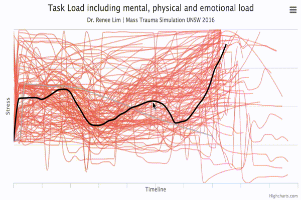
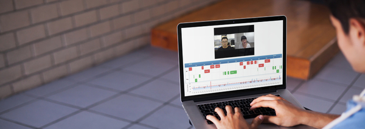

AUTHENTIC. POSITIVE. CHANGE.
Why are we here?
Our vision is to care for people by creating authentic, positive change to improve humanity and connection using evidence.
Who are we?

Dr. Renee Lim
- Medical Clinician - Locum doctor in emergency, Medicine, Geriatrics and Palliative Care
- Educator - Sydney University, UNSW - Curriculum, consultation skills programs, lecturer
- Communications Expert - Pam McLean Centre - Business Management, Course and content development, research and presentations, teaching, one on one development
- Engagement Expert - Consultant - Change management, staff development, Strategy, The Human Factor, creating communities, branding and marketing.
- Performer - Actor, Writer, Director, Video Production


What do we do?
Here are some examples of projects we have developed. Please contact us for more information and to see a demo.
THE PROBLEM: How do you create behavioural change using online teaching?
The Emodule is a behavioural change teaching platform that provides four modular activities that are based on the Kolb Learning cycle. Activities are linked to videos which are specifically designed to explore the subject and trigger thought, emotion, judgement and reflection. Crowdsourced feedback allows people to safely explore the different ways behaviour can be interpreted, and responded to, and also share behavioural solutions to problems, while also being exposed to Expert feedback and knowledge.
THE PROBLEM: How do you assess a student’s realtime experience without significant investment of resources?
The Journey Tool uses immediate reflection post activities to measure the participant’s experience of an event. It can be done on paper, or via smart device. By combining the journey tool with other validated measures, you can assess accuracy and effectiveness of the activity design, increase reflection of and understanding of the participants learning, and correlate the participant interpretation of their experience and learning with actual experience or learning measures.

THE PROBLEM: How do you increase understanding of information dense topics?
The Info Tool takes complex information and makes it easier and clearer to understand. It breaks down key concepts, and also provides information in accessible chunks. By combining visual learning with video animation, reflection and analysis with document annotation, and review and assessment with anomolous data and surveys/questionnaires, the user develops increased understanding, as well as clarifying and documenting areas needing further explanation which focuses future discussions on the important areas.
THE PROBLEM: How do you increase opportunities for learning from live interactions?
Using teleconferencing technology, EQ Clinic provides live interviews with feedback between a student and a simulated interviewee, which are recorded for review. The student is then exposed to multiple learning tools, based on educational pedagogy and psychological models, including the Kolb Learning Cycle, Autonomy support, simulation load, reflective practice, and visual analysis computer algorithms which provide Non verbal behaviour data, which create significant learning outcomes beyond a simple practicing of skills.

How do we make change?
We believe in User focused development, and so a significant part of our investment of time is in working with the client and/or users to truly understand both their needs, and their learning styles, and intended outcomes.
Often it is about revisiting the underlying purpose, strategy and value of the project to the organisation. Our team specialises in ensuring that all the needs of the project can be met, where possible, within a single design, by wearing our many different hats from the beginning of the Build.
We can provide a number of services, including strategic review, educational and content design, platform development including coding and programming, and ongoing hosting and data analysis of sites.
Using a combination of collaborative tools, we continually develop, review, revisit and reassess the program with the client and users, to ensure that we achieve the right outcomes.
We are also very interested in ensuring we receive valuable data feedback from our platforms, to ensure the program is working, to increase feedback about the learning of the students, and to increase the validity of the learning technology we use in the future, through research and ongoing development.
Let’s start with a meeting, and see where it goes from there. If the project matters, we will make it work.
Email Us